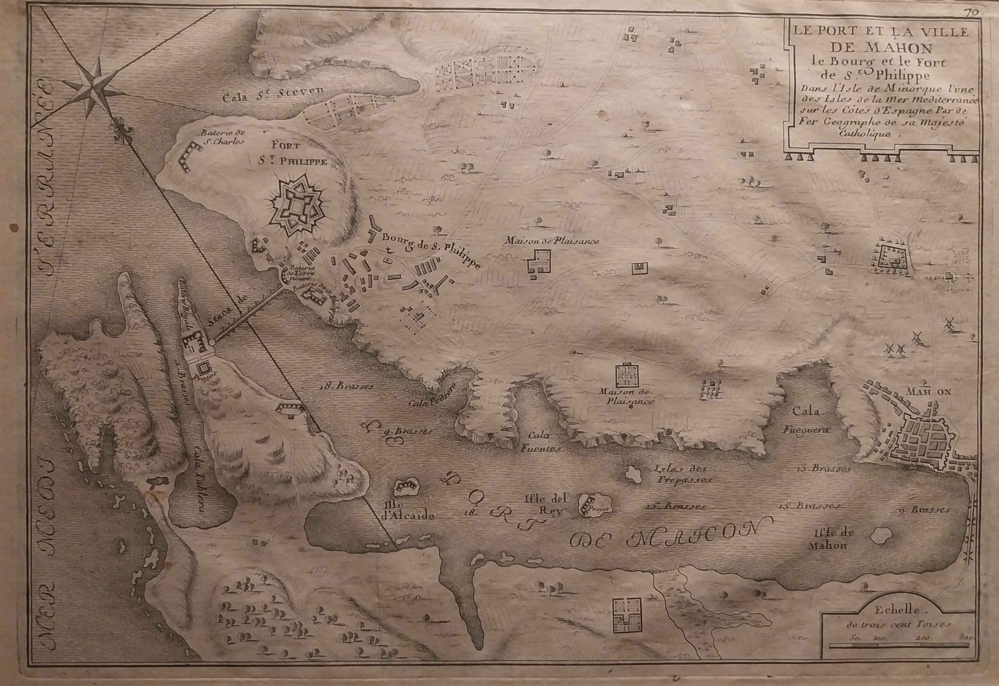

<html></html>

<head>
    <meta charset="UTF-8">
    <link rel="stylesheet" href="./css/style.css">
<title>Politica</title>
</head>

<body id="n3">
<h1 class="fontrara">Descobriment històric sobre la dominació francesa a Menorca</h1>
    <h3>Un descobriment d'un mapa del port de Maó que ens fa sospitar que encara hi ha elements de la dominació francesa a Menorca que no sabem</h3>
    <p>Es va trobar el passat divendres, durant les obres de restauració del castell de sant Felip un mapa del port de Maó en condicions sorprenentment en bastant bona qualitat. Es manté el quadre en bastant bona qualitat de cal.ligrafia i escriptura. Aquest esdeveniment vol dir que encara hi ha elements històrics de la dominació francesa que encara no coneixem?</p>
    
    <br>
    <a href="portada.html">Volver</a>
</body>

</html>